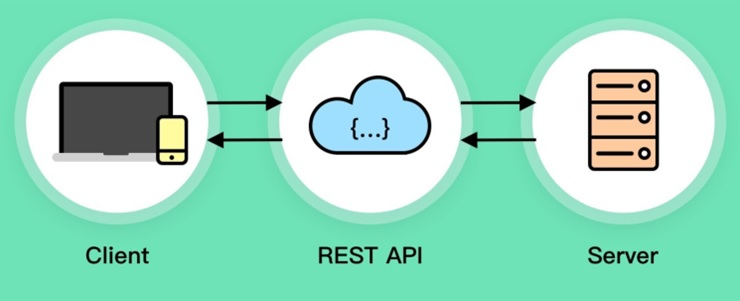
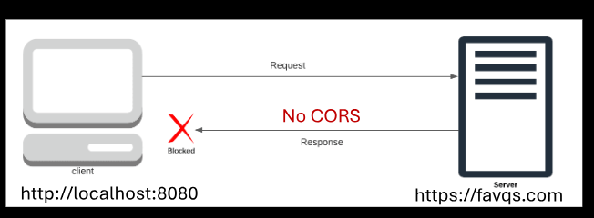
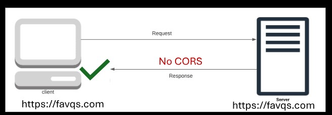
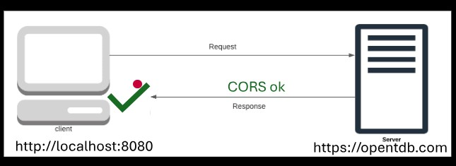
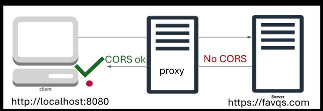

REST API
----------------------------------------------------

Rest: Representational State Transfer
API: Application Programming Interface
A set of rules for communicating with the server.
The URL to connect with the server must be properly formed.
1. Client : Makes a request according to the REAT API rules (menu).
2. REST API: Sends the request in a way the server understands.
3. Server: Processes the request.
4. REST API: Delivers the response (stringified object).
REST API Analogy
-------------------------------------------------------
 1. Customer: Requests a meat from the menue.
2. Waiter: Writes the request in a way the chef understands.
3. Chef: Processes the request by cooking the meal.
4. Waiter: Responds by delevering the meal.
1. Customer: Requests a meat from the menue.
2. Waiter: Writes the request in a way the chef understands.
3. Chef: Processes the request by cooking the meal.
4. Waiter: Responds by delevering the meal.
Trivia API
----------------------------------------------
Fetch function
----------------------------------------------
const promise = fetch("https://opentdb.com/api.php?amount=1");
Sends a request to the URL of the REST API
Return promise
Its resolve value is not a stringified object.
The resolve value is a special object created by the fetch function.
There's an extra step to access the response from the REST API.
The Text method
--------------------------------------------------
const promise = resolveValue.test(); //fetch object
Retrieves the stringified object from the fetch object.
Returns a promise.
Extracting the data
--------------------------------------------------
const response = JSON.parse(resolveValue);
const results = response.results;
const item = results[0];
const question = item.question;
const answer = item.correct_answer;
const incorrects = item.incorrect_answer;
Store each property one level at a time until you get the data you read.
Displaying the data
------------------------------------------
output(trivia);
1. Create sample HTML of trivia question and it's answers.
2. Converted it to a templet string.
- putting backticks around it
- store it in variables
- move it to the javascript file
3. Replaced with variables.
4. Output to a HTML element
How many planets are in the solar stsyem?
- Nine
- Seven
- Ten
- Eight
Specifing the data
--------------------------------------------------
https://opentdb.com/api.php?amount=2
https://opentdb.com/api_catagory_php
The REST Api documentation teaches how to form the URL to request specific data.
Specify amount to get multiple questions.
Get a list of catergories.
Use a slightly different URL to see a list of catergories anf their ID
Use the API helper to properly form a URL based on specifications
Paste the URL into the fetch function
Postman
----------------------------------------------------
An application for trying out and testing REST API.
The icon at the bottom left closes the History panel
The icon at the bottom right splits the panels vertically
Base URL
-------------------------------------------------------
The URL where the REST API is located
Key value pairs
----------------------------------------------
. They specify the data we want to request
. Key is on left, value is on the right
. They are appended to the base URL
. Start with ?
. Connected with = and separated by &
FavQ's - favorite quotes
--------------------------------------------
https://favqs.com/api
https://favqs.com/api/quotes
Favorite quotes API documentation
Use filter to find a word
Use type to find a tag or author
To use the/quotes endpoint, an API key is required
Endpoint
---------------------------------------------
/qotd
A path that is appended to a base URL.
Contain about specific resources.
Endpoint Question of the day.
NOTE: If a CORS proxy server is not used, there will be a CORS error.
API key
------------------------------------------
A unique string (or code) that grants access to a REST API.
To use some REST API's, an API key is required
Generate API Key
----------------
To use an API key from FavQ's.com To use an API key
1. Auth tab
2. Change the type to Bearer Token
3. Paste API key into the token box
API key headers
---------------------------------------------
const key = "abc123";
const options = {
header: {
Authorization: `Token token="${key}"`,
},
};
const promise = fetch(url, options);
1. Create an object with authorization header.
2. Send a request with fetch and the object.
CORS
--------------------------------------------
Cross Origin Resource Sharing
Origin: The web address of the client and server
Cross Origin: Different origins
Resource: Data such as files and stringified objects
Resource sharing: transmitting the resources

CORS is the origin's policy for sharing resources.
Servers are supposedd to tell browser their CORS policy.
The CORS policy is a list of origins that are allowed to access the server.
The browser enforces CORS.
Browsers block the response if the origin is not on the list.
------------------------
Some servers do not specify their CORS policy
Browsers automatically block responses form different origins
The quotes API dosen't specify a CORS policy
Browsers automatically block responses from the quotes API

Postman is not a browser, so it can receive the response.
The browser can receive the response because the URL matches.
The VS Code terminal is not a browser, so it receives the response.
The browser enforces CORS.

The browser can accept responses from an API that has CORS.
The trivia API has CORS for all origins.
CORS Proxy Server
----------------------------------------------

Allows the browser to receive repsponses from a server that does not specify CORS.
1. Accepts the request from the client
2. Forwards the request to the API
3. Receives the response from the API
4. Manipulates the response so the browser doesn't block it
thingproxy
--------------------------------------------------
const proxy = "https://thingproxy.freeboard.io/fetch/";
const baseUrl = "https://favqs.com/api";
const endpoint = "/qotd";
const url = proxy + baseUrl + endpoint;
const promise = fetch (url);
A public proxy server that's free to use.
Append the API URL to the proxy URL.
https://github.com/Freeboard/thingproxy
Fre APIs
--------------------------------------------
https://free.github.io/
Alist of free API's
Some require an API key
Press the ? button for color codes